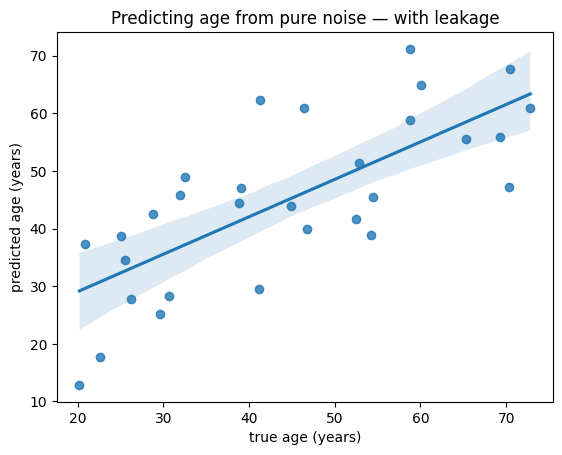
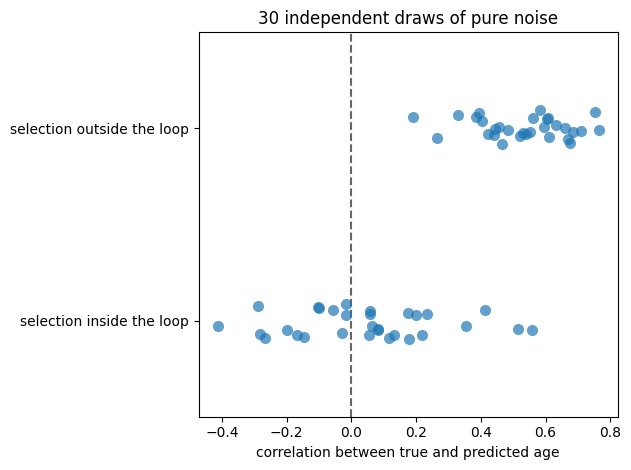
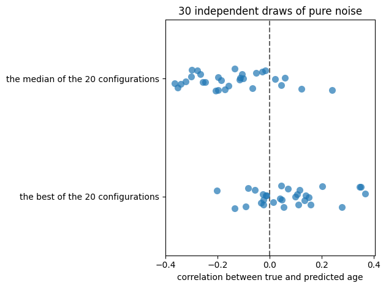

The Second Villain: Leakage#
Cross-validation works by making sure the model has absolutely no information about the data it is tested on. Absolutely none. That is a much stronger requirement than it first appears, and information has a way of seeping across the boundary.
Leakage is any path by which knowledge of the test data reaches the model. It does not require malice, or even carelessness: the most common forms look like perfectly ordinary preprocessing, and the resulting performance estimates can be spectacular.
A demonstration#
We will construct a dataset in which prediction is impossible by construction: 30 participants, 100 features of pure random noise, and their real ages. No model can do better than the baseline, because there is nothing to find.
import numpy as np
import pandas as pd
import seaborn as sns
import matplotlib.pyplot as plt
from sklearn.linear_model import Ridge
from sklearn.feature_selection import SelectKBest, f_regression
from sklearn.pipeline import Pipeline
from sklearn.model_selection import cross_val_predict, KFold
from sklearn.metrics import mean_absolute_error
DATA_URL = "https://raw.githubusercontent.com/pni-lab/predmod_lecture/master/ex_data/IXI/ixi.csv"
n_subjects = 30
n_features = 100
ixi = pd.read_csv(DATA_URL).sample(frac=1, random_state=42).reset_index(drop=True)
age = ixi['Age'].iloc[:n_subjects].values
rng = np.random.default_rng(seed=42)
noise = pd.DataFrame(rng.normal(size=(n_subjects, n_features)),
columns=[f'noise_{i}' for i in range(n_features)])
baseline_mae = mean_absolute_error(age, np.full(n_subjects, age.mean()))
print(f'baseline (predict the mean age): MAE {baseline_mae:.2f} years')
baseline (predict the mean age): MAE 14.12 years
Now the fatal step. We select the 30 features most strongly related to age — using all 30 participants, before any cross-validation — and only then cross-validate a Ridge model on the selected features.
###############################################################################################
# DO NOT DO THIS AT HOME: feature selection on the whole sample, outside the cross-validation #
leaky_features = SelectKBest(score_func=f_regression, k=30).fit_transform(X=noise, y=age) #
###############################################################################################
leaky_predictions = cross_val_predict(Ridge(alpha=1.0), X=leaky_features, y=age, cv=KFold(5))
leaky_mae = mean_absolute_error(age, leaky_predictions)
leaky_r = np.corrcoef(age, leaky_predictions)[0, 1]
sns.regplot(x=age, y=leaky_predictions)
plt.xlabel('true age (years)')
plt.ylabel('predicted age (years)')
plt.title('Predicting age from pure noise — with leakage')
plt.show()
print(f'MAE {leaky_mae:.2f} years (baseline {baseline_mae:.2f}) r = {leaky_r:.2f}')

MAE 9.57 years (baseline 14.12) r = 0.74
A correlation of that size between predicted and true age, from data containing no information whatsoever. In a paper, with a plot like that one, it would look like a result.
Now the same analysis done honestly, with the feature selection moved inside the cross-validation, where it is refitted on each training fold and never sees the held-out person:
honest_model = Pipeline([
('select', SelectKBest(score_func=f_regression, k=30)),
('regression', Ridge(alpha=1.0)),
])
honest_predictions = cross_val_predict(honest_model, X=noise, y=age, cv=KFold(5))
honest_mae = mean_absolute_error(age, honest_predictions)
honest_r = np.corrcoef(age, honest_predictions)[0, 1]
print(f'with leakage : MAE {leaky_mae:5.2f} years r = {leaky_r:5.2f}')
print(f'done honestly : MAE {honest_mae:5.2f} years r = {honest_r:5.2f}')
print(f'baseline : MAE {baseline_mae:5.2f} years')
with leakage : MAE 9.57 years r = 0.74
done honestly : MAE 12.35 years r = 0.37
baseline : MAE 14.12 years
The correlation collapses and the error moves most of the way back to the baseline. What is left is chance: with 30 participants, an \(r\) of 0.3 in either direction is unremarkable.
One dataset proves nothing, though — perhaps we were unlucky. Let’s repeat the whole experiment on thirty independent draws of the random features (the 30 participants, and so their ages, stay the same) and look at the distribution.
def leaky_and_honest_r(seed, n=n_subjects, p=n_features, k=30):
"""Correlation between true and predicted age, with and without leakage, on random features."""
y = ixi['Age'].iloc[:n].values
X = np.random.default_rng(seed).normal(size=(n, p))
selected_globally = SelectKBest(f_regression, k=k).fit_transform(X, y)
leaky = cross_val_predict(Ridge(alpha=1.0), X=selected_globally, y=y, cv=KFold(5))
pipeline = Pipeline([('select', SelectKBest(f_regression, k=k)), ('regression', Ridge(alpha=1.0))])
honest = cross_val_predict(pipeline, X=X, y=y, cv=KFold(5))
return np.corrcoef(y, leaky)[0, 1], np.corrcoef(y, honest)[0, 1]
repeats = pd.DataFrame([leaky_and_honest_r(seed) for seed in range(30)],
columns=['selection outside the loop', 'selection inside the loop'])
sns.stripplot(data=repeats.melt(var_name='analysis', value_name='r'),
x='r', y='analysis', size=8, alpha=0.7)
plt.axvline(0, color='0.4', ls='--')
plt.xlabel('correlation between true and predicted age')
plt.ylabel('')
plt.title('30 independent draws of pure noise')
plt.tight_layout()
plt.show()
repeats.mean().round(2)

selection outside the loop 0.53
selection inside the loop 0.05
dtype: float64
The verdict is unambiguous. Done honestly, the correlation scatters around zero, landing on both sides of it. Done with the selection outside the loop, it sits reliably around 0.5, and not one of the thirty draws came out negative — on data that contains nothing at all.
This is circular analysis, also known as double-dipping, and it is not rare.
Leakage through hyperparameters#
Feature selection is a fairly obvious culprit. Here is a subtler one, and it is the reason chapter 5 exists.
Suppose we now do everything correctly — every step inside a pipeline, nothing fitted outside the loop. But we do not know how many features to keep or how strongly to regularize, so we try twenty combinations, cross-validate each one properly, and report the best.
Every individual cross-validation here is impeccable. Watch what happens anyway. We again use nothing but noise, this time with 50 participants and 100 features, and again repeat over 30 draws so that no single lucky one can mislead us.
from sklearn.model_selection import KFold
def typical_and_best_r(seed, n=50, p=100):
"""Cross-validated r for 20 honestly evaluated configurations: the typical one, and the best."""
y = ixi['Age'].iloc[:n].values
X = np.random.default_rng(seed).normal(size=(n, p))
scores = []
for k in [5, 10, 20, 40]:
for alpha in [0.1, 1, 10, 100, 1000]:
pipeline = Pipeline([('select', SelectKBest(f_regression, k=k)),
('regression', Ridge(alpha=alpha))])
predictions = cross_val_predict(pipeline, X=X, y=y, cv=KFold(5))
scores.append(np.corrcoef(y, predictions)[0, 1])
return np.median(scores), max(scores)
selection = pd.DataFrame([typical_and_best_r(seed) for seed in range(30)],
columns=['the median of the 20 configurations',
'the best of the 20 configurations'])
sns.stripplot(data=selection.melt(var_name='what is reported', value_name='r'),
x='r', y='what is reported', size=8, alpha=0.7)
plt.axvline(0, color='0.4', ls='--')
plt.xlabel('correlation between true and predicted age')
plt.ylabel('')
plt.title('30 independent draws of pure noise')
plt.tight_layout()
plt.show()
selection.mean().round(2)

the median of the 20 configurations -0.15
the best of the 20 configurations 0.07
dtype: float64
The leakage did not happen inside any cross-validation. It happened when we took the maximum: we used performance computed from held-out participants to make a decision about the model, and then reported that same performance as if it were an unbiased estimate. What we have reported is not “how well this model predicts” but “how well the luckiest of twenty models predicts on the very data that crowned it”.
Note how much milder this is than the previous demonstration. Picking the best of twenty shifts the reported correlation up by roughly 0.2 relative to a typical one of them — which is what you would have got by committing to a configuration in advance. That is not a result fabricated out of nothing — it is a systematic optimism, which grows with the number of choices you make and shrinks as the sample gets larger.
Where leakage hides#
In general, any step performed outside the cross-validation loop that uses information from the participants you are about to test on is leakage. Some common examples:
Scaling or normalizing all features before splitting.
StandardScalercomputes a mean and standard deviation; computed on the whole dataset, they contain the test participants. Put the scaler in the pipeline, as we did in the previous section.Imputing missing values using column means computed over everybody.
Feature selection or dimensionality reduction on the whole dataset, as above. (PCA is safe with respect to the target, but fitting it on all participants still lets the test data shape the transformation.)
Image preprocessing that pools across participants — for example registering scans to a study-specific template built from the whole cohort.
Trying several preprocessing pipelines and keeping the one that cross-validates best. Same mechanism as the hyperparameter example, usually with far more choices involved.
Duplicated or related observations — two scans of the same person, twins, siblings, repeated visits — landing on both sides of the split. The model then recognizes a person rather than predicting a property. Use
GroupKFold.Target leakage: a feature that is a proxy for the target because of how the data was collected. In a clinical dataset, “number of prescriptions issued” is an excellent predictor of “was diagnosed” — and useless prospectively.
What protects you#
Put everything in the pipeline. If every step that learns anything from data lives inside a
scikit-learn Pipeline, and the pipeline as a whole is cross-validated, the framework refits each
step per fold and most leakage becomes impossible by construction. This is the single most
effective habit in applied machine learning.
Nest the cross-validation when you tune hyperparameters — the subject of the next chapter.
Validate externally. Because leakage can be so hard to spot, the real proof of a predictive model is performance on genuinely independent data: a different cohort, a different site, prospectively acquired samples. Cross-validation (internal validation) is the first step, not the last. The strongest version is to publish or preregister the fully specified model before the validation data is collected, which makes leakage arithmetically impossible.
Note
Leakage is usually not a consequence of bad faith. Machine learning is typically deployed in complex analysis scenarios — many features, many preprocessing options, many defensible choices — and leakage slips in unnoticed. Being aware of the danger, keeping the number of analysis branches small, reporting them transparently, and using more data are what turn a cross-validated result into one that survives contact with a new dataset.
Exercise 4.4
In the first demonstration, increase n_subjects from 30 to 100, 200 and 400 (and in the second,
the n=50 default of typical_and_best_r). Does the spurious performance go away?
Solution
It shrinks substantially but does not vanish, and the ratio of features to participants is what governs it. With 100 noise features and 400 participants, selecting the best 30 gives the model much less room to exploit chance associations. This is the general pattern: leakage is most dangerous exactly where biomedical research usually operates — many features, few participants.
Exercise 4.5
Repeat the first demonstration with the real cortical volumes instead of noise, comparing the leaky and the honest analysis. Is the difference between them smaller or larger than with noise?
Solution
Smaller, but still present — and this is what makes leakage so insidious. With real data the leaky analysis produces a result that is plausible, merely inflated. There is no absurdity to alert you, as there is when noise predicts age with r = 0.7. You cannot detect leakage by looking at the result; you can only prevent it by construction.
Exercise 4.6
Think through your own analysis pipeline, from raw data to result. List every step that uses information from more than one participant. Which of them happen before your train-test split?